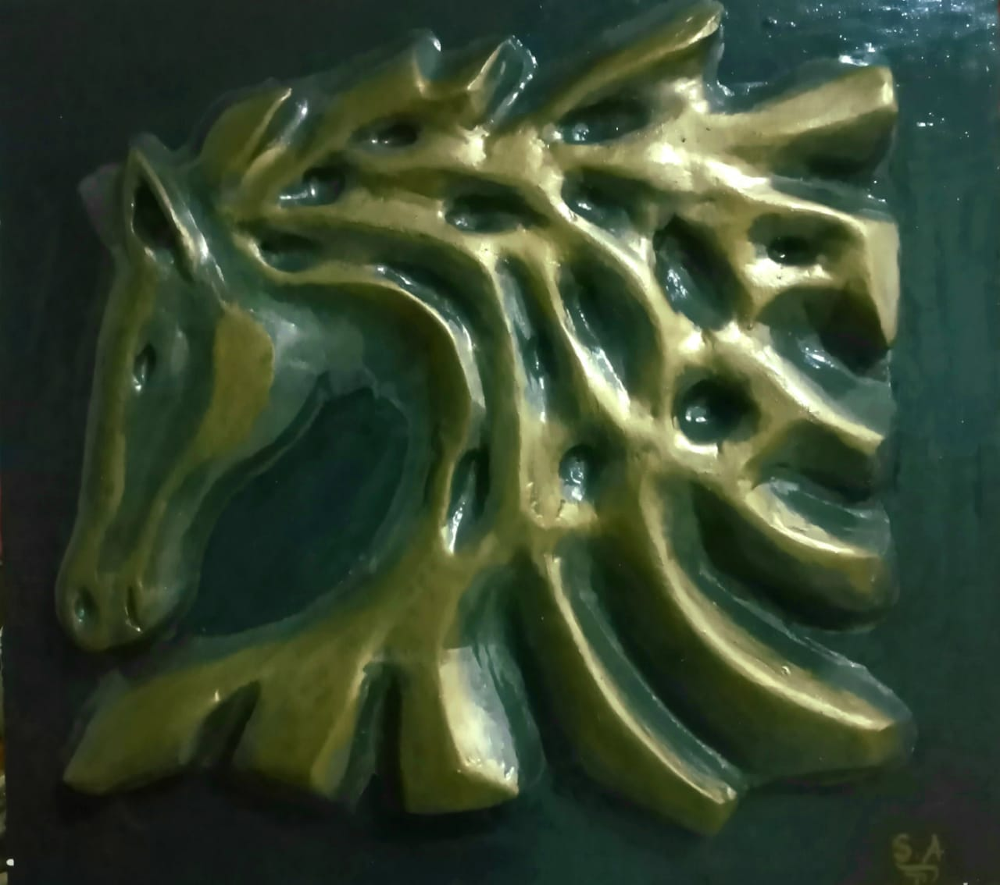
Une invocation plastique du mouvement perpétuel et de la force intérieure. À travers le bas-relief et la lumière dorée qui perce l'obscurité, cette œuvre incarne l'élévation de l'esprit, la noblesse de l'instinct et la danse sacrée de l'énergie universelle ancrée dans la matière.
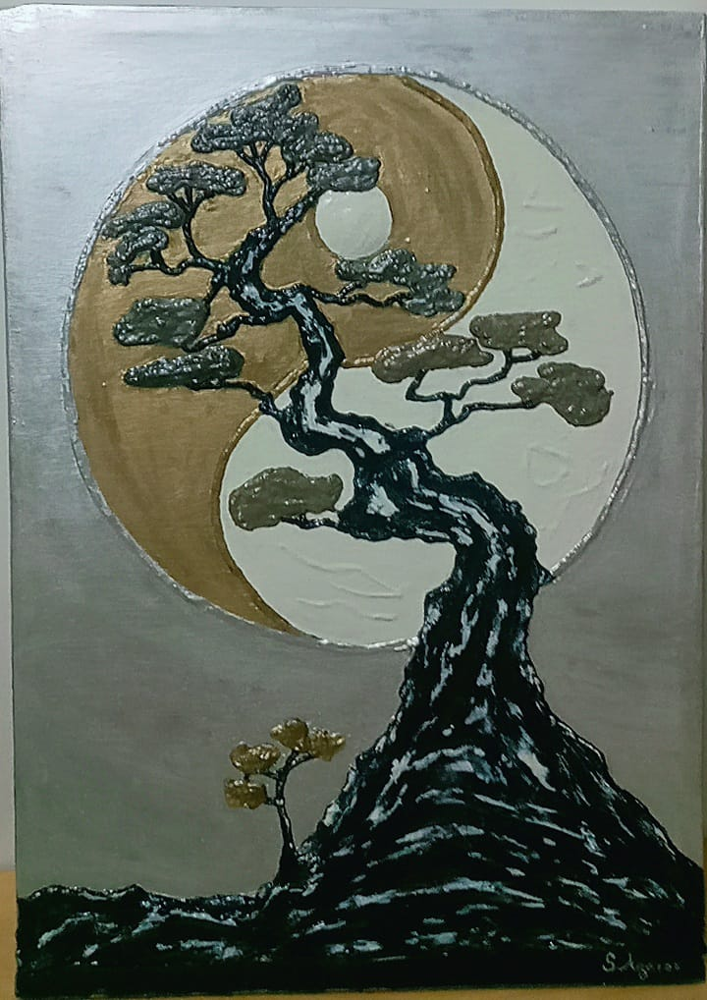
Une méditation visuelle sur l'équilibre des éléments et l'immélodiance du temps. Les racines et les strates minérales se connectent au tout, offrant à l'âme un espace de paix intérieure, de sagesse silencieuse et d'enracinement profond dans l'univers.
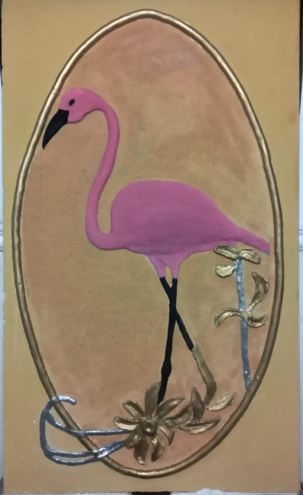
Une ode à la poésie du vivant et à la pureté des formes. Cette sculpture murale célèbre la dignité, la légèreté de l'être et la communion intime entre la matière terrestre et la grace céleste.
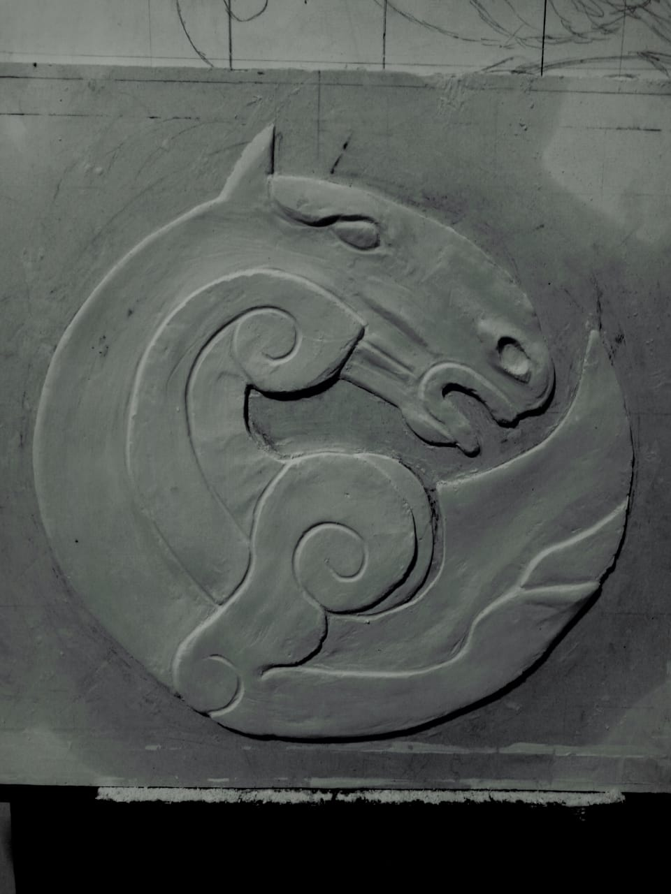
Gardienne des mémoires et des seuils intemporels, cette miniature architecturale en pisé insuffle l'esprit des anciennes cités. Elle symbolise le passage entre le monde visible et les mystères voilés de l'histoire spirituelle.
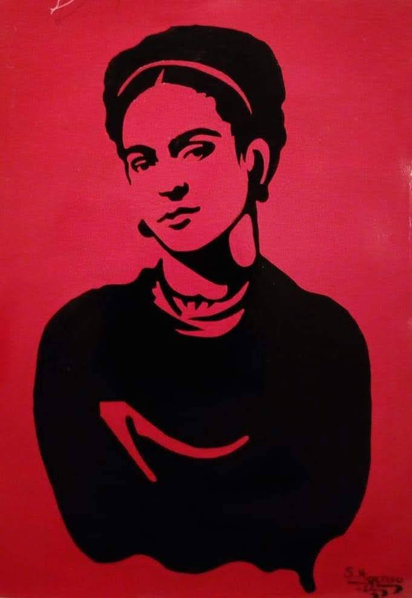
Quand la calligraphie se fait vibration de l'âme. Chaque tracé d'or est un mantra visuel, une élévation de la pensée où la géométrie sacrée rencontre la lumière pour nourrir l'esprit de contemplation.
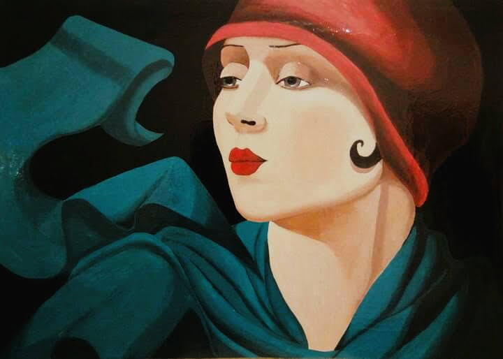
Des visages étirés vers l'infini, porteurs de regards profonds qui scrutent l'invisible. Une introspection poétique où la douceur des teintes traduit la vulnérabilité et la force de l'essence humaine.
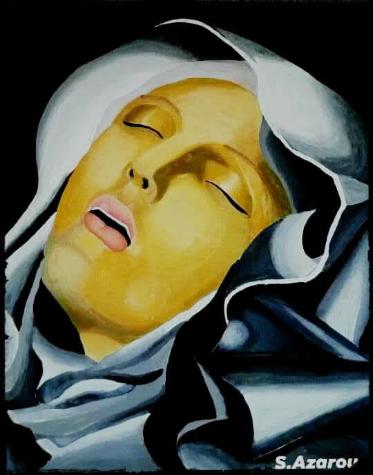
Un dialogue graphique entre la modernité et l'archétype. Les contrastes forts capturent l'aura des figures qui marquent l'inconscient collectif et laissent une empreinte indélébile dans l'espace social et artistique.
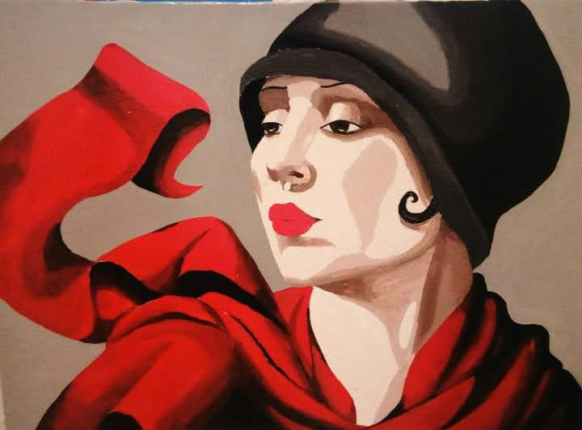
À travers les drapés d'époque et les expressions habitées, cette toile rend hommage à la vaillance de l'esprit, à l'honneur et à la quête de justice qui transcendent les époques historiques.
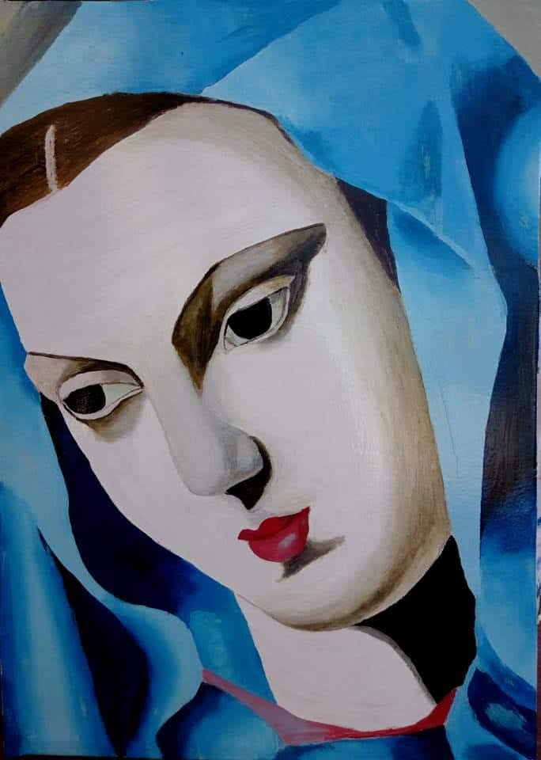
Une échappée surréaliste où la poésie florale devient le symbole de la renaissance de l'âme. Les textures oniriques enveloppent le spectateur dans un monde de métaphores délicates et de mystère subtil.
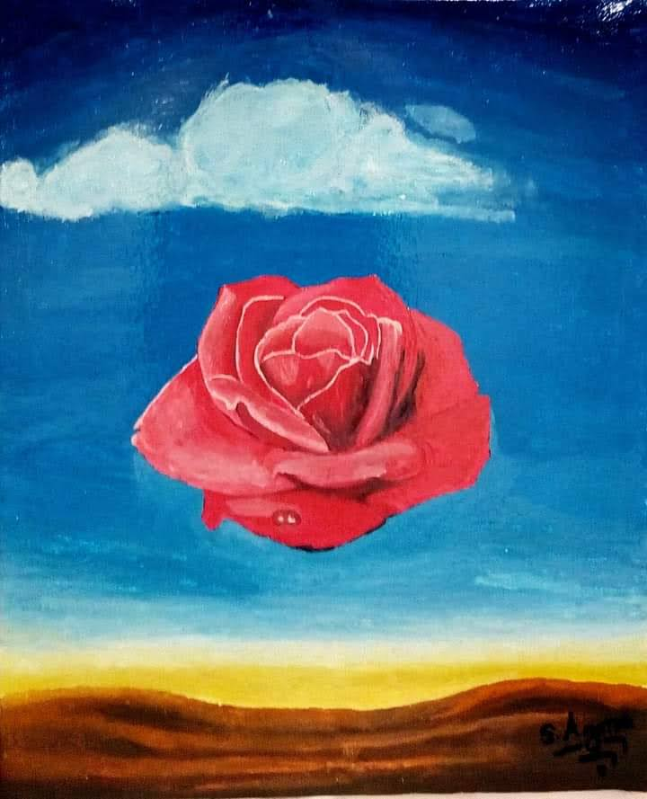
Un travail sculptural brut, façonné par les mains et dicté par la terre. Cette création incarne l'origine de la matière, le temps géologique et la mémoire ancestrale gravée dans la glaise et le pisé.
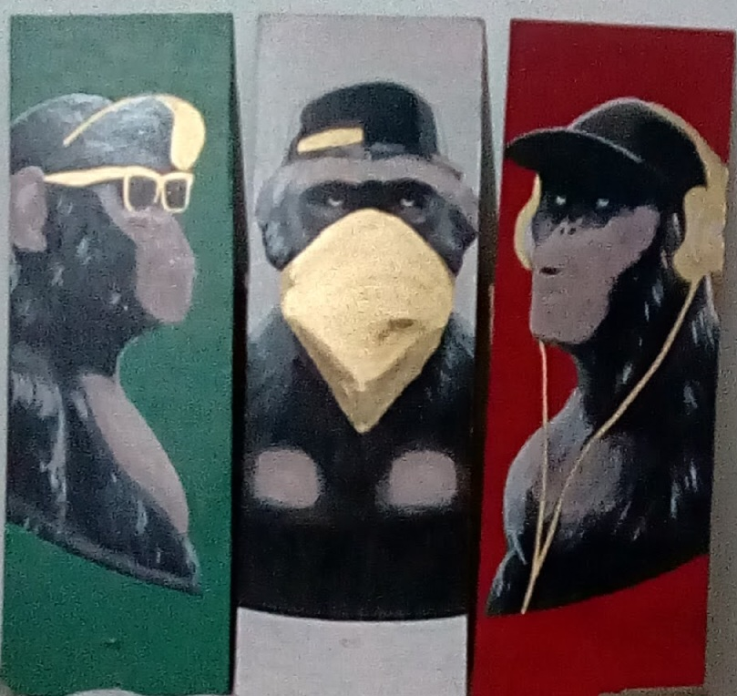
Une fusion subtile entre le design spatial et la vibration artistique. Les patines, les reliefs et les teintes chaleureuses transforment l'espace de vie en un sanctuaire d'harmonie et d'élévation esthétique.